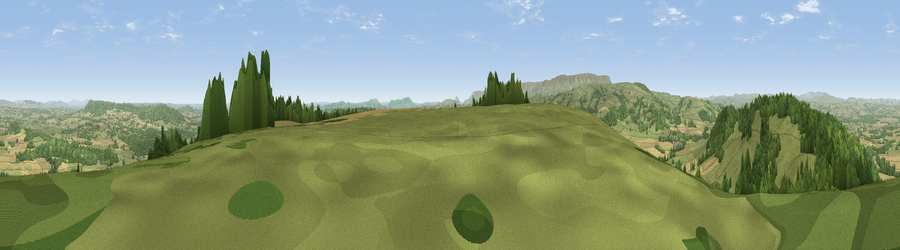

Viewpoint near Moccas
#2257 in England · top 7% of its area beats it · near MoccasThe view, rendered

A 360° render of this exact spot computed from the terrain model, tree cover and land cover — summer colours, afternoon light, calibrated against photographs of famous viewpoints. Real trees, hedges and buildings will differ in detail.
The panorama
Grey silhouette: terrain skyline in each direction (720 bearings, Earth curvature and refraction included). Dashed green: skyline with trees (+15 m) and buildings (+8 m) as obstacles. Blue strip: how far the ground is visible on each bearing.
Where the view opens
Wedge length = distance to the farthest visible ground on that bearing (vegetation-aware). Rings at 10, 25 and 50 km.
What fills the view
47% grassland · 31% woodland · 21% cropland ·
Angular shares of the visible panorama (visual magnitude), not map area. Landscape diversity 0.47 (0–1 Shannon).
Key numbers
More beautiful places nearby
The staircase of upgrades: each row has a higher view potential than everything closer. Driving times are estimates from straight-line distance, calibrated against real road routing — check an actual route before setting out.
| Place | Direction | Drive | Score |
|---|---|---|---|
| Bredwardine Hil | NW · 4 km | ~9 min | 77.1 |
| Viewpoint near Middlewood | NW · 5 km | ~11 min | 79.4 |
| Merbach Hill | NW · 5 km | ~11 min | 81.1 |
| Viewpoint near Craswall | WSW · 11 km | ~21 min | 81.5 |
| Garway Hill | SSE · 19 km | ~33 min | 84.6 |
| Herefordshire Beacon | E · 42 km | ~61 min | 85.8 |
| Millennium Hill | E · 42 km | ~61 min | 86.9 |
| Worcestershire Beacon | E · 43 km | ~63 min | 87.1 |
52.06862, -2.96171 · source: screening · position refined by local search. Computed location — check access rights before visiting.